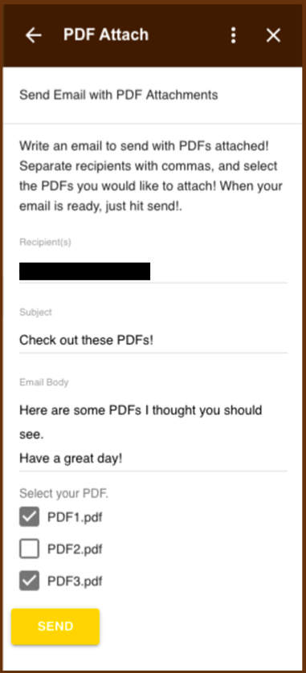
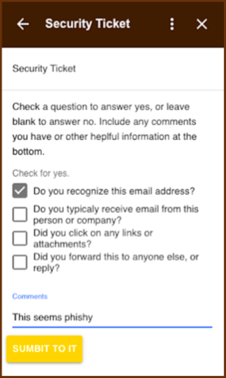

Dwyer Google Migration
In Spring of 2020, I took a project-based class called Software Design and Development. My main project for the class involved helping a local business, Dwyer instruments. Dwyer Instruments decided to migrate from a largely on-premises, Microsoft Office and Windows based infrastructure to Google Cloud based services. The transition disrupted a number of workflows and habits, impacting their overall business processes and creating friction for adoption by their workforce. My team partnered with Dwyer IT to mitigate these issues by building a variety of G-Suite based solutions. The ultimate goal was the creation of sufficiently similar alternatives to the Microsoft tools, at a production level of quality, that would reduce stress for both IT and the larger Dwyer workforce. I personally oversaw the development of two tools, PDF Attach and Security Ticket.
Check out our full undergraduate research presentation here.
PDF Attach
One feature from Microsoft that Dwyer employees liked was a button that allowed a PDF email attachment to be automatically attached to a new draft email. Gmail does not have that function by default, but add-ons can add functionality. These were a relatively new Gmail feature at the time of the project, so documentation was scarce, making development slow and difficult. The final product is an in-page side window in Gmail and Drive that allows attachments from selected email conversations or Drive files to be automatically attached to an email and sent.
Pictures

This is the interface that Dwyer employees see when they can send an email with an automatically attached PDF.
Security Ticket
Dwyer IT also wanted to improve their ability to identify and respond to phishing attempts. So, I developed a security ticket add-on for Gmail that allows Dwyer employees to easily forward suspicious emails to the IT department.
Pictures

This is the interface that Dwyer employees see when they receive an email. It allows them to automatically send the email to IT with comments.

Author: Eric Yager
Eric is a computer science & mathematics student and teaching assistant at Valparaiso University. He is also President of Valpo's student chapter of the Association for Computing Machinery (ACM) and Vice President of Valpo's Math Club. He likes to play chess (especially the bughouse variant), program in Go, and tent camp with friends.